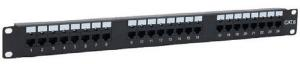

Patch Panel
Es un dispositivo de hardware utilizado en redes informáticas para organizar y administrar los cables de red. Funciona como un punto central de conexión para los cables permanentes (cables de bajada) que vienen de la pared o el techo, y los cables patch cord (cables de conexión) más cortos que van hacia los dispositivos electrónicos individuales.
